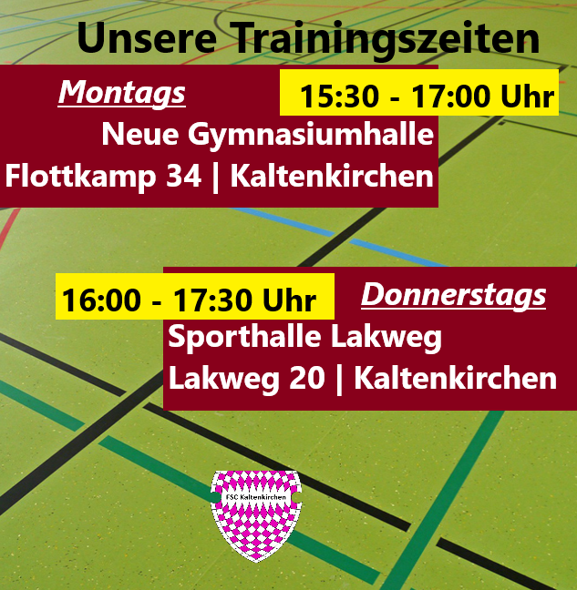

Kaltenkirchen Rubberducks
5on5 Flag-Football

08.03.2023 | 10:14 Uhr | Armin Zachotzki
Winterzeit ist Hallenzeit
Draußen ist es kalt und die Plätze auf der Anlage an der Schirnauallee
sind bei Frost, welchen wir sogar in Norddeutschland ab und zu mal haben,
gesperrt.
Daher weichen wir vorerst auf die Hallen am Gymnasium Kaltenkirchen und
die der Grundschule am Lakweg aus.
Die Rückkehr auf den Platz planen wir derzeit Mitte/Ende März.
Hier und auf unseren Social Media Seiten werden wir aber rechtzeitig
informieren, insbesondere aber auch daher, weil sich die Montagszeit ein klein
wenig verschieben würde.
Die Adressen und Zeiten findet ihr noch mal hier!